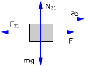
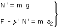
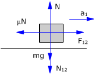
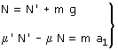
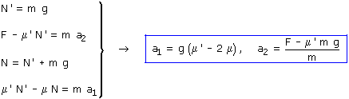
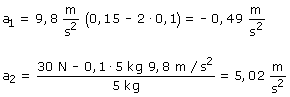

|
Si los bloques tienen aceleraciones diferentes no sirve para
nada utilizar el c.d.m, hay que aplicar las ecuaciones de la dinámica
a cada bloque
|  |
 |
Las fuerzas interiores son:
N12, N21 que corresponden a la normal de
las super-ficies en contacto. Estas dos fuerzas tienen el mismo
módulo: N'
F12, F21 que corresponden a la fuerza de
rozamiento en-tre los bloques. Estas dos fuerzas tienen el mismo
módu- lo: μN'
(La fuerza de rozamiento tiene el valor máximo porque hay
movimiento relativo entre los bloques)
Sentido
de las fuerzas de rozamiento
|
 |
 |
Combinando las ecuaciones obtenidas resulta un sistema de
incógnitas: a1, a2


La aceleración negativa del bloque 1 indica que este
no se mueve porque lo sujeta el rozamiento con el suelo. Únicamente
se moverá, respecto al suelo, el bloque 2
|